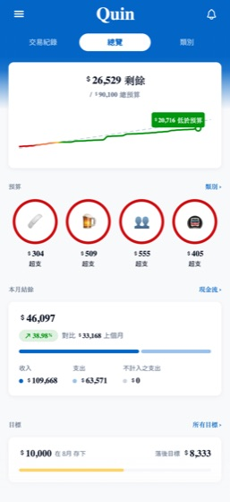
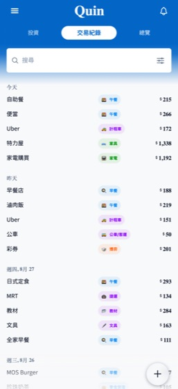
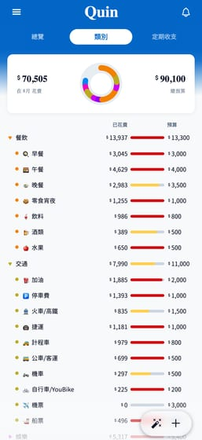
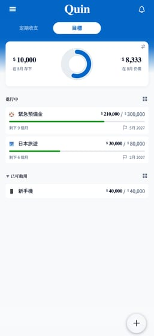
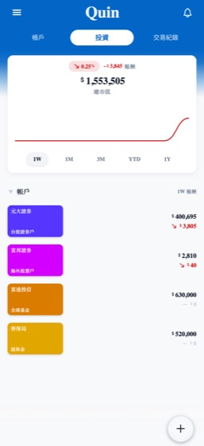
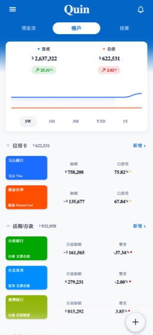
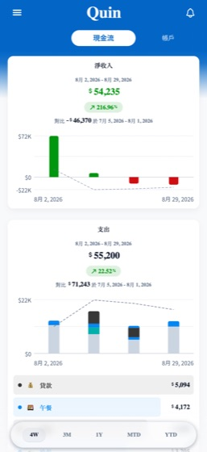
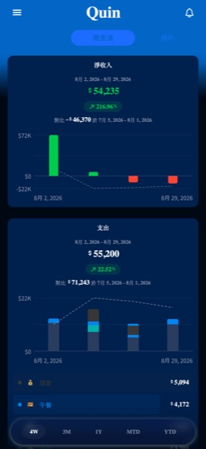

Media assets and facts for editors and press.
| App name | Landy Money — 懶得記 in Traditional Chinese |
|---|---|
| Developer | HSIN WEI LEE — independent developer |
| Category | Finance |
| Released | 4 August 2026 |
| Current version | 1.0.9 — September 2026 |
| Platforms | iPhone (iOS 16.4+) · Android phones. Tablets are not supported. |
| Languages | 10 interface languages: English, Traditional Chinese, Cantonese, Japanese, Korean, Spanish, Brazilian Portuguese, Indonesian, Vietnamese, Thai |
| Price | Free. In Taiwan a subscription unlocks automatic e-invoice import, with a one-month free trial. Everywhere else every feature is free and the subscription is purely a way to support development. |
| App Store | apps.apple.com/tw/app/id6758532357 |
| Google Play | play.google.com/store/apps/details?id=com.twentyoneisawesome.quin |
| Product site | twentyoneisawesome.github.io/quin-press-kit |
| Support & privacy | quin-support |
Landy Money turns Taiwan's national e-invoice (電子發票) system into an expense tracker that keeps itself. Connect your carrier once and every purchase arrives already categorized and matched against your budgets — no receipts, no manual entry.
Anything the carrier does not cover can be spoken instead: say “lunch, 120, cash” and Landy Money fills in the amount, category and account. Speech-to-text runs on the device, and offline it still resolves whatever it can work out locally.
Around that sits a full finance app: a one-glance dashboard, envelope budgets with overspend alerts, savings goals funded from real account balances, holdings priced from TWSE and US markets, recurring-bill reminders, multi-currency accounts with daily exchange rates, and home screen widgets on both platforms — budget left, quick add, upcoming bills, and the e-invoice carrier barcode.
There is no sign-up and no cloud account. The ledger is a local, biometrically locked database on the device, fully usable offline from the first launch.
No account No cloud sync No ads No third-party trackers Offline-first
Tap Demo Mode on the very first screen. The complete app loads with realistic data in seconds — no sign-up and no personal information required.
iPhone 6.9" · 1320×2868 PNG. Click any image for the full-resolution file. Screenshots use the app's built-in demo data, not a real person's finances.








Short — for a caption or a list entry:
Link your Taiwanese e-invoice carrier once and Landy Money writes your ledger for you — or just say what you spent. Budgets, goals and TWSE-priced holdings included, with no account and no cloud.
Long — for a paragraph of copy:
Landy Money is an offline-first personal finance app built around Taiwan's government e-invoice system. Connect a carrier once and purchases arrive already categorized and matched against your budgets, so the ledger keeps itself. Anything the carrier misses can be added by voice in one sentence. Alongside that sit envelope budgets, savings goals tied to real account balances, holdings priced from TWSE and US markets, recurring-bill reminders, multi-currency accounts and home screen widgets. Landy Money requires no account and syncs to no cloud — the ledger is a local, biometrically locked database on the device. Outside Taiwan every feature is free.
Press enquiries, review copies and questions are all welcome.
{kind=link}
{kind=link}
{kind=link}
{kind=link}
{kind=link}
{kind=link}
{kind=link}
{kind=link}
{kind=link}
{kind=link}